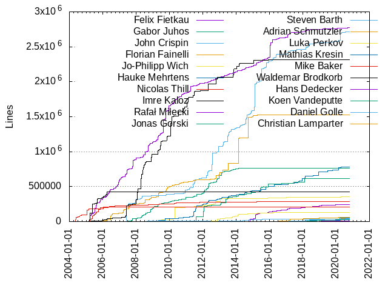
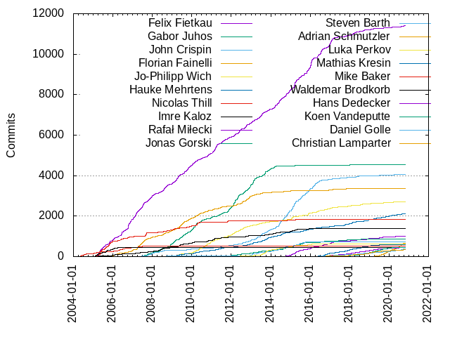

Authors
| Author | Commits (%) | + lines | - lines | First commit | Last commit | Age | Active days | # by commits |
|---|
| Felix Fietkau | 11404 (23.16%) | 2774216 | 5435149 | 2005-03-06 | 2020-10-19 | 5705 days, 18:11:38 | 2719 | 1 |
| Gabor Juhos | 4536 (9.21%) | 764249 | 1938547 | 2007-06-18 | 2018-01-18 | 3867 days, 3:57:32 | 907 | 2 |
| John Crispin | 4067 (8.26%) | 2712703 | 2225532 | 2007-06-02 | 2020-10-19 | 4888 days, 12:01:43 | 824 | 3 |
| Florian Fainelli | 3356 (6.82%) | 1528730 | 1115981 | 2005-11-30 | 2020-01-04 | 5147 days, 17:08:18 | 1102 | 4 |
| Jo-Philipp Wich | 2713 (5.51%) | 352819 | 126707 | 2008-11-16 | 2020-10-04 | 4340 days, 4:01:13 | 1187 | 5 |
| Hauke Mehrtens | 2123 (4.31%) | 782318 | 546785 | 2009-02-18 | 2020-10-18 | 4259 days, 19:15:51 | 746 | 6 |
| Nicolas Thill | 1837 (3.73%) | 283982 | 167461 | 2005-02-17 | 2015-12-31 | 3969 days, 2:44:11 | 531 | 7 |
| Imre Kaloz | 1385 (2.81%) | 2316399 | 1690666 | 2004-11-15 | 2018-02-15 | 4840 days, 10:39:46 | 519 | 8 |
| Rafał Miłecki | 1002 (2.04%) | 242826 | 22571 | 2014-09-14 | 2020-09-18 | 2195 days, 15:20:40 | 418 | 9 |
| Jonas Gorski | 872 (1.77%) | 618170 | 153951 | 2011-07-24 | 2020-02-28 | 3140 days, 12:17:56 | 290 | 10 |
| Steven Barth | 717 (1.46%) | 31403 | 17673 | 2008-05-20 | 2016-02-19 | 2830 days, 16:36:55 | 369 | 11 |
| Adrian Schmutzler | 676 (1.37%) | 63851 | 448299 | 2018-01-19 | 2020-10-25 | 1010 days, 5:00:09 | 254 | 12 |
| Luka Perkov | 632 (1.28%) | 126485 | 205902 | 2012-06-04 | 2019-08-24 | 2637 days, 21:25:19 | 229 | 13 |
| Mathias Kresin | 586 (1.19%) | 49837 | 132427 | 2015-10-03 | 2020-03-17 | 1627 days, 6:38:45 | 269 | 14 |
| Mike Baker | 521 (1.06%) | 212047 | 44796 | 2004-03-28 | 2010-02-04 | 2139 days, 4:27:10 | 229 | 15 |
| Waldemar Brodkorb | 464 (0.94%) | 423142 | 145868 | 2005-02-06 | 2016-06-04 | 4136 days, 5:40:16 | 141 | 16 |
| Hans Dedecker | 452 (0.92%) | 5331 | 5011 | 2016-03-31 | 2020-10-20 | 1664 days, 9:25:22 | 350 | 17 |
| Koen Vandeputte | 450 (0.91%) | 25569 | 72566 | 2016-06-16 | 2020-05-14 | 1427 days, 23:06:53 | 201 | 18 |
| Daniel Golle | 393 (0.80%) | 41479 | 28356 | 2014-09-26 | 2020-10-25 | 2220 days, 21:14:30 | 230 | 19 |
| Christian Lamparter | 334 (0.68%) | 59608 | 40234 | 2016-04-07 | 2020-09-25 | 1632 days, 0:35:18 | 167 | 20 |
These didn't make it to the top: Michael Büsch, Alexandros C. Couloumbis, Kevin Darbyshire-Bryant, Petr Štetiar, David Bauer, Álvaro Fernández Rojas, Zoltan Herpai, Lars-Peter Clausen, Rosen Penev, Matthias Schiffer, Stijn Tintel, Daniel Engberg, Piotr Dymacz, Hamish Guthrie, Travis Kemen, Yousong Zhou, Chuanhong Guo, Daniel Dickinson, Andy Boyett, Vasilis Tsiligiannis, Rod Whitby, Mirko Vogt, Matteo Croce, Tomasz Maciej Nowak, Yangbo Lu, Sungbo Eo, Paul Spooren, DENG Qingfang, Sven Eckelmann, Alexander Couzens, Claudio Mignanti, Alexandru Ardelean, Pawel Dembicki, Pavel Kubelun, Ansuel Smith, Eneas U de Queiroz, Hannu Nyman, Eugene Konev, INAGAKI Hiroshi, Lucian Cristian, Thibaut VARÈNE, Paul Wassi, Martin Schiller, Ralph Hempel, Peter Denison, Luis Araneda, Florian Eckert, Tim Yardley, Tim Harvey, Robert Marko, Alberto Bursi, Henryk Heisig, Oliver Ertl, Jason A. Donenfeld, Roman Yeryomin, Roger Pueyo Centelles, Zoltan HERPAI, Philip Prindeville, Linus Walleij, Thibaut VARENE, Ben Greear, Andre Heider, Alexey Brodkin, Magnus Kroken, Geoff Levand, Tony Ambardar, Michael Heimpold, Sergey Ryazanov, Martin Blumenstingl, David Woodhouse, Stefan Lippers-Hollmann, Chris Blake, Moritz Warning, Sandeep Sheriker Mallikarjun, Dirk Neukirchen, Deng Qingfang, Michal Cieslakiewicz, Markus Wigge, Aleksander Jan Bajkowski, Syrone Wong, Russell Senior, Rosy Song, Daniel Gimpelevich, Yuji Mano, Sven Roederer, Luiz Angelo Daros de Luca, Gerry Rozema, Daniel Gonzalez Cabanelas, Daniel F. Dickinson, Jeff Kletsky, Alex Maclean, blogic, Karl Palsson, Kristian Evensen, Tobias Schramm, Leon M. George, Josua Mayer, Johann Neuhauser, Biwen Li, Ryan Mounce, Evgeniy Didin, Stijn Segers, Sandeep Sheriker M, Michael Lee, Konstantin Demin, Josef Schlehofer, Chen Minqiang, Ned Ludd, John Audia, Davide Fioravanti, Christoph Krapp, Tomislav Požega, Stefan Koch, Ram Chandra Jangir, Lech Perczak, Joseph C. Lehner, Jens Muecke, Giuseppe Lippolis, Cezary Jackiewicz, Vladimir Vid, Rui Salvaterra, Kabuli Chana, Jeffery To, Daniel González Cabanelas, Bjørn Mork, André Valentin, Vitaly Chekryzhev, Thomas Langer, Ted Hess, Mathew McBride, Thomas Petazzoni, Mike Albon, Marko Ratkaj, Dmitry Tunin, Baptiste Jonglez, BangLang Huang, Alif M. Ahmad, Yutang Jiang, Tobias Wolf, Nick Hainke, Birger Koblitz, Ben Whitten, Ash Benz, diizzyy, Marcin Jurkowski, Lorenzo Santina, Emil Muratov, Andrea Dalla Costa, Adrian Panella, Weijie Gao, Thomas Reifferscheid, Raphaël Huck, Maxim Anisimov, Matt Merhar, L. D. Pinney, Jose Vasconcellos, Andreas Ziegler, rmilecki, Toke Høiland-Jørgensen, Sebastian Kemper, Russell King, Paul Fertser, Oever González, Mirko Parthey, Mantas Pucka, Furong Xu, Florian Larysch, David Santamaría Rogado, Christian Schoenebeck, Andy Walsh, Andrew Yong, Andrew Cameron, Alin Nastac, Alan Swanson, 李国, 张鹏, Tino Reichardt, Thomas Nixon, Sergey Sergeev, Sander Vanheule, Matti Laakso, Julien Dusser, Josh Bendavid, Dirk Feytons, Christian Mehlis, André Draszik, Alexis Green, Tobias Welz, Tim Thorpe, Tan Zien, René van Dorst, Peter Wagner, Michal Hrusecky, Michael Yartys, Matthias Badaire, Ludwig Thomeczek, Gabe Rodriguez, Eric Luehrsen, Eddi De Pieri, Daniel Danzberger, Dan Haab, Catrinel Catrinescu, Ben Mulvihill, Zoltan Gyarmati, YuheiOKAWA, Stanislav Galabov, Sebastian Schaper, Scott Roberts, Peter Lundkvist, P.Wassi, Oldřich Jedlička, NOGUCHI Hiroshi, Michal Sojka, Klaus Kudielka, João Chaínho, Huangbin Zhan, Henrique de Moraes Holschuh, Fredrik Olofsson, FUKAUMI Naoki, Enrique Giraldo, Damir Samardzic, Arjen de Korte, Alexey Dobrovolsky, dissent1, Yury Shvedov, Walter Sonius, Vittorio Gambaletta (VittGam), Vittorio Gambaletta, Timo Sigurdsson, Santiago Piccinini, Roman Bazalevsky, Ralph Sennhauser, Radek Dostál, Qian Zheng, Pierre Lebleu, Petko Bordjukov, Oskari Lemmela, NeilBrown, Michael Gray, Kyle Copperfield, Karel Kočí, Julian Labus, Jose Olivera, John Thomson, Jianhui Zhao, Jeremy Kerr, Jan Hoffmann, Ian Pozella, HsiuWen Yen, Georgi Vlaev, Etienne Haarsma, Brett Mastbergen, Antony Antony, Antonio Silverio, Andreas Böhler, Ali MJ Al-Nasrawy, Alexandru Gagniuc, Alex Lewontin, Aleksandr V. Piskunov, p-wassi, neheb, dpeddi, Zhao Gang, Yong-hyu, Ban, Yanase Yuki, Wei Yongjun, W. Michael Petullo, Vincent Wiemann, Valentin Spreckels, Vaclav Svoboda, Tobias Mädel, Thomas Vincent-Cross, Thomas Albers, Steven Honson, Steve Glennon, Steffen Weinreich, Steffen Förster, Sergio E. Nemirowski, Rozhuk Ivan, Perry Melange, Peng Zhang, Ozgur Can Leonard, Oleg I. Vdovikin, Nickolay Ledovskikh, Nick Bowler, Michael Pratt, Maxim Storchak, Marty E. Plummer, Luo chongjun, Lars Wessels, Kyson Lok, Kuang Rufan, Krystian Kozak, Kip Porterfield, Kimmo Vuorinen, Karl Vogel, Karl Pálsson, Joseph Tingiris, Johannes Kimmel, Jeremiah McConnell, Jasper Scholte, Jan Alexander, Jakov Petrina, J. Scott Heppler, Hal Martin, Günther Kelleter, George Hopkins, Franz Flasch, Filip Moc, Etienne Champetier, Enrico Mioso, Dustin Gathmann, Donald Hoskins, Dominik Menke, Ding Tengfei, David Yang, David Pinilla Caparrós, Conor O'Gorman, Conn O'Griofa, Christopher Hill, Christo Nedev, Camille Bilodeau, Boris Krasnovskiy, Bert Vermeulen, Bastian Bittorf, Arne Zachlod, Anton Arapov, Alexey Belyaev, Alex Samorukov, leo chung, daniel, Zheng Qian, Zefir Kurtisi, Yufei Miao, Yuan Tao, Yorkie Liu, Yo Abe, Yen-Ting-Shen, Xuefu Lin, Xu Wang, Vitalij Alshevsky, Vieno Hakkerinen, Victor Shyba, Vianney le Clément de Saint-Marcq, Val Kulkov, Ulrich Weber, Tokunori Ikegami, Thorsten Glaser, Thomas Hebb, Tal Keren, Sven Wegener, Steven Lin, Stephen Walker, Skirmantas Lauzikas, Simon Hailes, Shane Peelar, Serg Studzinskii, Samuel Casa, Romain MARIADASSOU, Rocco Folino, Robinson Wu, Richard Fröhning, Renaud Lepage, Remi NGUYEN VAN, Qin Wei, Piotr Stefaniak, Peter Stadler, Pali Rohár, Oswald Buddenhagen, Nikos Mavrogiannopoulos, Nicolò Veronese, Nick Brassel, Nicholas Smith, Milan Krstic, Michael Marley, Maxim Gorbachyov, Matthias Fritzsche, Mathieu Martin-Borret, Marty Plummer, Marty Jones, Martin Weinelt, Markus Scheck, Marius Genheimer, Marek Lindner, Marek Behún, Luochongjun, LoveSy, Lorenzo Bianconi, Lim Guo Wei, Kirill Lukonin, Kevin Schmidt, Keith Maika, Jonathan Lancett, Joe Mullally, Joan Moreau, Jiri Kastner, Jing Lin, Jiawei Wang, Javier Marcet, Jan Pavlinec, Jackson Ming Hu, Jackson Lim, Hyeonsik Song, Hsing-Wang Liao, Helmut Schaa, Helge Mader, Hartmut Knaack, Hans Ulli Kroll, Hans Geiblinger, George Amanakis, Gabor Varga, Frederik Noe-Sdun, Florian Beier, Fabian Bläse, Etienne CHAMPETIER, Enrique Rodríguez Valencia, Edmunt Pienkowsky, Dongming Han, Dominick Grift, Denis Osvald, David Thornley, David Lam, Dario Ernst, Danijel Tudek, Daniel Santos, Daniel Gonzalez, Daniel Albers, Colby Whitney, Claudio Leite, Christian Mauderer, Bruno Randolf, Bernhard Geier, Bernhard Frauendienst, Ben Kelly, Arvid E. Picciani, Arthur Skowronek, Antti Seppälä, Antonio Quartulli, Andy Binder, Andrey Jr. Melnikov, Andrey Bondar, Andreas Schultz, Andreas Oberritter, Andreas Eberlein, Andrea Merello, Anderson Vulczak, Alin Năstac, Alexander Müller, Adrià Llaudet, Ademar Arvati Filho, 尤晓杰, 小桥, 南浦月, Ørjan Malde, xixiao zheng, weidong jia, sven friedmann, shanpo, riptidewave93, rektide de la faye, protonesso, perillamint, pacien, mohammad rasim, lbzhung, kyson Lok, kbuild test robot, hux, dibdot, dani, bobafetthotmail, Zhong Jianxin, Zhijun You, Zhenjian Zhang, Zhao Yu, Zhang Jingye, Zhai Zhaoxuan, ZengFei Zhang, Zachary Riedlshah, Zachary Cook, Yushi Nishida, Yunhui Fu, Yuan Chenmang, Yong-hyu Ban, Ye Tao, Xotic750, Xiaobo Tian, Xavier Douville, Wren Turkal, Wojciech Jowsa, Wojciech Dubowik, Willem van den Akker, Wilfried Klaebe, Wilco Baan Hofman, WeiDong Jia, Wang Xin-yu (王昕宇), Wang JiaWei, Vladislav Grishenko, Vladimir Zahradnik, Vladimir Kot, Vittorio G (VittGam), Vittorio Alfieri, Vishnu Swaroop Duddu, Vijayakumar Durai, Vignesh Balasubramaniam, Valentín Kivachuk, Uwe Arnold, Tuomas Tynkkynen, Torbjörn Jansson, Toni Uhlig, Tomasz Moń, Tom Brouwer, Tolga Cakir, Tim Small, Thomas Weißschuh, Thomas Roberts, Thomas Fuzeau, Thomas Equeter, Tero Jänkä, Tedaz, Tan Hong Hui, TOCK Chiu, Szabolcs Hubai, Svetoslav Neykov, Sven Schwermer, Sven Over, Sunguk Lee, Sukru Senli, Sujith Manoharan, Stephan Knauss, Stephan Brunner, Stefan Weil, Stefan Tomanek, Stefan Sydow, Stefan Oberhumer, Stanislaw Gruszka, Simon Wunderlich, Simon Quigley, Simon Paterson, Sigurd Hogsbro, Signed-off-by: Henryk Heisig, Sibren Vasse, Shuanglin Liu, Shibajee Roy, Sergei Burakov, Serge Vasilugin, Sebastian Quilitz, Sebastian Meiling, Sebastian Kinne, Sebastian Fleer, Sean Kenny, Scott Shambarger, Satadru Pramanik, Sascha Paunovic, Santiago Rodriguez-Papa, Samantha Collard, Salvatore Mesoraca, Rytis Zigmantavičius, Rustam Gaptulin, Russell Morris, Rujun Wang, Ruixi Zhou, Rowan Border, Ron Angeles, Roman Spychała, Roman Kuzmitskii, Roman Hampel, Roman Glova, Roman Bazalevskiy, Rogan Dawes, Rodolfo Giometti, Robert Resch, Rob Mosher, Rinki Kumari, Richard Musil, Richard Huynh, Reto Schneider, René Mayrhofer, Rene Treffer, Rene Kjellerup, Rasim Kalimullin, R. Diez, Qin Wie, Qi Jiang, Pushpal Sidhu, Pramod Pancha, Phi Nguyen, Petr Konecny, Pavlo Samko, Pavel Balan, Paul Schulz, Paul Oranje, Paul Blazejowski, Pau Escrich, Olli Asikainen, Oliver Fleischmann, Norbert van Bolhuis, Nishant Sharma, Nicolas Pitre, Nick Lowe, Nick Briggs, Nicholas DePetrillo, Nelson Cai, Neal Oakey, Nathaniel Wesley Filardo, Natalie Kagelmacher, Mohammed Berdai, Mogula Pranay, Milan Krstić, Mike McCormack, Mikael Magnusson, Micke Prag, Michael T Farnworth, Michael Kuron, Micha Lenk, Merlijn Wajer, Maximilian Pachl, Mauro Mozzarelli, Matthew Gyurgyik, Matteo Panella, Matt Mets, Mateus B. Cassiano, Mat Trudel, Massimo Tum, Mason Clarke, Masashi Honma, Masafumi UTSUGI, Martin Wetterwald, Martin Strobel, Martin Kennedy, Markov Mikhail, Mark-MC Lee (李明昌), Mario Schroen, Marek Vasut, Marcel Jost, Marc Benoit, Manuel Kock, Manuel Giganto, Maksym Medvedev, Makoto Takeuchi, Magnus Frühling, Lukáš Mrtvý, Luke McKee, Lukas Mrtvy, Liu Yu, Linus Lüssing, Linus Kardell, Liangbin Lian, Li Zhang, Lev, Lazar Demin, Kuan-Yi Li, Klaus, Kjel Delaey, Kin Chan, Kenneth Johansson, Keith Wong, KeLei Liang, Kayo Phoenix, Karol Dudek, Karl-Felix Glatzer, Kamil Wcislo, Justin Kilpatrick, Jun Su, Julius Schulz-Zander, Julien Rabier, Julian Kornberger, Julian Haupt, Ju Se Hoon, Joseph C. Sible, Joseph Benden, Jorge Amorós, Jordan Sokolic, Jonathan Thibault, Johnny S. Lee, John Sommerville, John Marrett, Johannes Römer, Joachim Fünfer, Jing Qiu, Jimmy Zhong, Jesus Fernandez Manzano, Jean-Pierre St-Yves, Jaylin Yu, Jayantajit Gogoi, Jaroslav Safka, Jan-Tarek Butt, Jan Niehusmann, Jan Kardell, James Taylor, James Christopher Adduono, Jakub Tymejczyk, Jake Staehle, Jack Chen, Jaap Buurman, Ivan Shapovalov, Ivan Hörler, Ingo Feinerer, Imran Khan, Ilya Katsnelson, Ilya Gordeev, Icenowy Zheng, Ibrahim Tachijian, Iblis Lin, Ian Cooper, Huan Truong, Harvey Phillips, Hao Dong, Hanqing Wong, Guillaume Lefebvre, Guan-Hong Lin, Grégoire Delattre, Gregory L. Dietsche, Graham Fairweather, Gospod Nassa, Gilles Mazoyer, Gergely Kiss, Gad Krumholz, Fushan Wen, Furkan Alaca, Freddy Leitner, Francois Goudal, Florian Klink, Federico Cappon, Fan Fan, Fabio Bettoni, Eubert Bao, Ernst Spielmann, Emir Efe Kucuk, Emerson Pinter, Eike Feldmann, Egor Mikhaylov, Edward O'Callaghan, Edward Matijevic, Eduardo Barros, Edoardo Scaglia, Edi Turn, Domagoj Pintaric, Dmytro Smyrnov, Dmitry Sutyagin, Django Armstrong, Dirk Brenken, Denton Gentry, Davy Hollevoet, Davide Ammirata, David Varga, David Lutz, David Ehrmann, Daniele Castro, Daniel Kucera, Daniel Halmschlager, Daniel Bailey, Daniel A. Maierhofer, DUPONCHEEL Sébastien, D. Andrei Măceș, Cong Wang, Claudiu Brasovean, Christian Lütke-Stetzkamp, Christian Franke, Christian Buschau, Christian Bayer, Chris Morgan, Chris Koying Browet, Chris Breuer, Chris Blakely, Chih-Wei Chen, Changmin Jang, Catalin Patulea, Carsten Wolff, Carlo Nel, Carl-Daniel Hailfinger, Bruno Pena, Brian Norris, Brian J. Murrell, Brandy Krueger, Brandon Koepke, Borja Salazar, Bob Cai, Bjoern Dobe, Benjamin Valentin, Bastian Köcher, Bart Lauret, Axel Neumann, Avi H. D, August Huber, Aubrey McIntosh, PhD, Arturas Moskvinas, Arnout Vandecappelle (Essensium/Mind), Arjun AK, Antony Black, Antonis Kanouras, Anthony Sepa, Andy Strohman, Andrius Štikonas, Andrey Polischuk, Andrey Kunitsyn, Andrew Freeman, Andrew Crawley, Andrej Vlasic, Andreas Wiese, Anderson Luiz Alves, Amol Bhave, Amir Rachum, Allan Nick Pedrana, Alexander Wördekemper, Alban Bedel, Adrián Panella, Adoal Xu, Adi Shammout, Abhilash Tuse, Aaron Goodman, Aaron Curley
Only top 20 authors shown
Only top 20 authors shown
| Month | Author | Commits (%) | Next top 5 | Number of authors |
|---|
| 2020-10 | Daniel Golle | 20 (20.20% of 99) | Adrian Schmutzler, Felix Fietkau, Yousong Zhou, Hauke Mehrtens, Nick Hainke | 30 |
| 2020-09 | Adrian Schmutzler | 45 (20.00% of 225) | Felix Fietkau, Daniel Golle, David Bauer, Paul Spooren, Chuanhong Guo | 50 |
| 2020-08 | Adrian Schmutzler | 73 (20.80% of 351) | Hauke Mehrtens, Felix Fietkau, Paul Spooren, Daniel Golle, Christian Lamparter | 61 |
| 2020-07 | Adrian Schmutzler | 66 (24.18% of 273) | David Bauer, Daniel Golle, David Woodhouse, Hauke Mehrtens, Petr Štetiar | 69 |
| 2020-06 | Álvaro Fernández Rojas | 30 (14.49% of 207) | Adrian Schmutzler, David Woodhouse, Felix Fietkau, Petr Štetiar, David Bauer | 61 |
| 2020-05 | Adrian Schmutzler | 48 (16.72% of 287) | Álvaro Fernández Rojas, Thibaut VARÈNE, Sungbo Eo, Matthias Schiffer, Koen Vandeputte | 67 |
| 2020-04 | Adrian Schmutzler | 41 (11.33% of 362) | Chuanhong Guo, DENG Qingfang, David Bauer, Daniel Golle, Kevin Darbyshire-Bryant | 78 |
| 2020-03 | Petr Štetiar | 36 (9.60% of 375) | DENG Qingfang, Sungbo Eo, Kevin Darbyshire-Bryant, Daniel Golle, Thibaut VARÈNE | 74 |
| 2020-02 | Hauke Mehrtens | 34 (13.28% of 256) | Adrian Schmutzler, Sungbo Eo, Tomasz Maciej Nowak, David Bauer, Daniel Engberg | 51 |
| 2020-01 | Adrian Schmutzler | 42 (15.00% of 280) | Rosen Penev, Hauke Mehrtens, David Bauer, Petr Štetiar, Ansuel Smith | 60 |
| 2019-12 | Adrian Schmutzler | 54 (20.00% of 270) | Ansuel Smith, Rosen Penev, Christian Lamparter, Daniel Golle, David Bauer | 56 |
| 2019-11 | Adrian Schmutzler | 34 (12.83% of 265) | Rosen Penev, Koen Vandeputte, Hauke Mehrtens, Petr Štetiar, Sungbo Eo | 71 |
| 2019-10 | Adrian Schmutzler | 28 (12.44% of 225) | Koen Vandeputte, David Bauer, Hauke Mehrtens, Michal Cieslakiewicz, Sungbo Eo | 62 |
| 2019-09 | Adrian Schmutzler | 25 (10.64% of 235) | Rafał Miłecki, Koen Vandeputte, Álvaro Fernández Rojas, Moritz Warning, Jo-Philipp Wich | 65 |
| 2019-08 | Koen Vandeputte | 30 (11.49% of 261) | Adrian Schmutzler, Álvaro Fernández Rojas, David Bauer, Hauke Mehrtens, Sandeep Sheriker M | 58 |
| 2019-07 | Adrian Schmutzler | 63 (22.66% of 278) | Petr Štetiar, Rafał Miłecki, Moritz Warning, Kevin Darbyshire-Bryant, Chuanhong Guo | 57 |
| 2019-06 | Petr Štetiar | 28 (12.23% of 229) | Koen Vandeputte, Christian Lamparter, Kevin Darbyshire-Bryant, Adrian Schmutzler, Rafał Miłecki | 64 |
| 2019-05 | Hauke Mehrtens | 28 (14.29% of 196) | Koen Vandeputte, Petr Štetiar, Hans Dedecker, Christian Lamparter, Tomasz Maciej Nowak | 52 |
| 2019-04 | Koen Vandeputte | 19 (10.44% of 182) | Petr Štetiar, Hans Dedecker, Hauke Mehrtens, Tomasz Maciej Nowak, Biwen Li | 47 |
| 2019-03 | Daniel Golle | 33 (11.83% of 279) | Felix Fietkau, Petr Štetiar, Hauke Mehrtens, Koen Vandeputte, Christian Lamparter | 68 |
| 2019-02 | Koen Vandeputte | 24 (12.18% of 197) | Daniel Engberg, Hans Dedecker, Christian Lamparter, Felix Fietkau, Stijn Tintel | 55 |
| 2019-01 | Mathias Kresin | 42 (13.59% of 309) | Koen Vandeputte, Jo-Philipp Wich, Chuanhong Guo, Hans Dedecker, Christian Lamparter | 65 |
| 2018-12 | Christian Lamparter | 33 (9.46% of 349) | Petr Štetiar, Rafał Miłecki, Stijn Tintel, Mathias Kresin, Hauke Mehrtens | 74 |
| 2018-11 | Hauke Mehrtens | 34 (12.55% of 271) | Petr Štetiar, Rafał Miłecki, Mathias Kresin, Koen Vandeputte, Felix Fietkau | 55 |
| 2018-10 | Christian Lamparter | 23 (11.00% of 209) | Koen Vandeputte, Felix Fietkau, Hauke Mehrtens, Hans Dedecker, Kevin Darbyshire-Bryant | 64 |
| 2018-09 | Felix Fietkau | 27 (14.52% of 186) | Hauke Mehrtens, Rosen Penev, Koen Vandeputte, Luis Araneda, Kevin Darbyshire-Bryant | 55 |
| 2018-08 | Mathias Kresin | 41 (13.18% of 311) | Koen Vandeputte, Jo-Philipp Wich, Chuanhong Guo, Hans Dedecker, David Bauer | 67 |
| 2018-07 | Felix Fietkau | 35 (10.67% of 328) | Mathias Kresin, Chuanhong Guo, Daniel F. Dickinson, Rafał Miłecki, Yangbo Lu | 79 |
| 2018-06 | Daniel Golle | 22 (8.66% of 254) | John Crispin, Lucian Cristian, Hans Dedecker, Kevin Darbyshire-Bryant, Daniel Engberg | 79 |
| 2018-05 | John Crispin | 23 (8.01% of 287) | Jo-Philipp Wich, Rosen Penev, Hans Dedecker, Daniel Golle, Kevin Darbyshire-Bryant | 67 |
| 2018-04 | Felix Fietkau | 42 (19.00% of 221) | Matthias Schiffer, Mathias Kresin, Hauke Mehrtens, Hans Dedecker, Daniel Golle | 59 |
| 2018-03 | Felix Fietkau | 40 (15.75% of 254) | Hauke Mehrtens, Rafał Miłecki, Mathias Kresin, Hans Dedecker, Matthias Schiffer | 60 |
| 2018-02 | Felix Fietkau | 56 (19.44% of 288) | Hauke Mehrtens, Piotr Dymacz, Zoltan HERPAI, John Crispin, Tim Harvey | 61 |
| 2018-01 | Matthias Schiffer | 38 (9.95% of 382) | Jo-Philipp Wich, Mathias Kresin, Hauke Mehrtens, Kevin Darbyshire-Bryant, Gabor Juhos | 70 |
| 2017-12 | Mathias Kresin | 27 (13.30% of 203) | Christian Lamparter, Felix Fietkau, Hauke Mehrtens, Hans Dedecker, Kevin Darbyshire-Bryant | 47 |
| 2017-11 | Felix Fietkau | 34 (16.11% of 211) | Hauke Mehrtens, Mathias Kresin, Rafał Miłecki, Hans Dedecker, Sven Eckelmann | 56 |
| 2017-10 | Hauke Mehrtens | 33 (12.18% of 271) | Mathias Kresin, Yangbo Lu, Hans Dedecker, Stijn Tintel, Felix Fietkau | 63 |
| 2017-09 | Stijn Tintel | 22 (12.87% of 171) | Kevin Darbyshire-Bryant, Daniel Engberg, Sandeep Sheriker Mallikarjun, Lorenzo Santina, Hauke Mehrtens | 49 |
| 2017-08 | John Crispin | 16 (12.60% of 127) | Stijn Tintel, Hans Dedecker, Thibaut VARENE, Martin Schiller, Koen Vandeputte | 42 |
| 2017-07 | Mathias Kresin | 22 (10.78% of 204) | Hauke Mehrtens, Piotr Dymacz, Jonas Gorski, Thibaut VARENE, Jo-Philipp Wich | 51 |
| 2017-06 | Piotr Dymacz | 18 (9.73% of 185) | Alexander Couzens, Jo-Philipp Wich, Felix Fietkau, Jonas Gorski, Mathias Kresin | 53 |
| 2017-05 | Felix Fietkau | 23 (10.13% of 227) | Piotr Dymacz, Matthias Schiffer, Jo-Philipp Wich, Yousong Zhou, Florian Fainelli | 66 |
| 2017-04 | Mathias Kresin | 25 (14.53% of 172) | Felix Fietkau, Alexander Couzens, Hans Dedecker, Florian Fainelli, John Crispin | 46 |
| 2017-03 | Felix Fietkau | 48 (15.74% of 305) | Rafał Miłecki, Mathias Kresin, Piotr Dymacz, Daniel Engberg, John Crispin | 59 |
| 2017-02 | Felix Fietkau | 95 (23.99% of 396) | Rafał Miłecki, John Crispin, Jonas Gorski, Álvaro Fernández Rojas, Thibaut VARENE | 79 |
| 2017-01 | Felix Fietkau | 192 (38.71% of 496) | Jo-Philipp Wich, Rafał Miłecki, Hans Dedecker, Matthias Schiffer, Stijn Tintel | 73 |
| 2016-12 | Felix Fietkau | 100 (30.30% of 330) | Jo-Philipp Wich, Rafał Miłecki, Hauke Mehrtens, Mathias Kresin, John Crispin | 67 |
| 2016-11 | Felix Fietkau | 62 (19.14% of 324) | Mathias Kresin, Rafał Miłecki, Pavel Kubelun, Florian Fainelli, Jo-Philipp Wich | 69 |
| 2016-10 | Alexandru Ardelean | 36 (10.94% of 329) | Jo-Philipp Wich, Mathias Kresin, Daniel Engberg, Felix Fietkau, Rafał Miłecki | 58 |
| 2016-09 | Felix Fietkau | 48 (18.05% of 266) | Mathias Kresin, Matthias Schiffer, Rafał Miłecki, Jonas Gorski, Álvaro Fernández Rojas | 45 |
| 2016-08 | Felix Fietkau | 76 (24.28% of 313) | Rafał Miłecki, Mathias Kresin, Jo-Philipp Wich, Stijn Tintel, John Crispin | 49 |
| 2016-07 | Felix Fietkau | 173 (48.46% of 357) | John Crispin, Rafał Miłecki, Hauke Mehrtens, Jo-Philipp Wich, Jonas Gorski | 48 |
| 2016-06 | Felix Fietkau | 64 (19.75% of 324) | John Crispin, Jo-Philipp Wich, Álvaro Fernández Rojas, Hauke Mehrtens, Rafał Miłecki | 55 |
| 2016-05 | Felix Fietkau | 131 (29.05% of 451) | John Crispin, Jo-Philipp Wich, Mathias Kresin, Alexander Couzens, Álvaro Fernández Rojas | 57 |
| 2016-04 | John Crispin | 106 (46.70% of 227) | Jo-Philipp Wich, Hauke Mehrtens, Rafał Miłecki, Álvaro Fernández Rojas, Hans Dedecker | 18 |
| 2016-03 | John Crispin | 97 (46.63% of 208) | Felix Fietkau, Luka Perkov, Rafał Miłecki, Jo-Philipp Wich, Hauke Mehrtens | 11 |
| 2016-02 | Felix Fietkau | 89 (39.56% of 225) | John Crispin, Rafał Miłecki, Jo-Philipp Wich, Hauke Mehrtens, Zoltan Herpai | 10 |
| 2016-01 | Felix Fietkau | 361 (70.37% of 513) | John Crispin, Rafał Miłecki, Jo-Philipp Wich, Hauke Mehrtens, Zoltan Herpai | 13 |
| 2015-12 | John Crispin | 100 (31.25% of 320) | Felix Fietkau, Jo-Philipp Wich, Rafał Miłecki, Hauke Mehrtens, Imre Kaloz | 13 |
| 2015-11 | Felix Fietkau | 118 (37.82% of 312) | John Crispin, Jo-Philipp Wich, Hauke Mehrtens, Luka Perkov, Rafał Miłecki | 11 |
| 2015-10 | John Crispin | 94 (45.85% of 205) | Felix Fietkau, Hauke Mehrtens, Steven Barth, Michael Büsch, Luka Perkov | 14 |
| 2015-09 | Felix Fietkau | 100 (36.63% of 273) | John Crispin, Steven Barth, Rafał Miłecki, Jonas Gorski, Hauke Mehrtens | 8 |
| 2015-08 | John Crispin | 61 (33.33% of 183) | Jonas Gorski, Felix Fietkau, Hauke Mehrtens, Zoltan Herpai, Rafał Miłecki | 10 |
| 2015-07 | John Crispin | 114 (36.66% of 311) | Felix Fietkau, Jonas Gorski, Hauke Mehrtens, Steven Barth, Zoltan Herpai | 11 |
| 2015-06 | Felix Fietkau | 69 (29.61% of 233) | Steven Barth, Rafał Miłecki, John Crispin, Jonas Gorski, Hauke Mehrtens | 11 |
| 2015-05 | Felix Fietkau | 86 (32.82% of 262) | John Crispin, Jo-Philipp Wich, Rafał Miłecki, Steven Barth, Imre Kaloz | 11 |
| 2015-04 | John Crispin | 103 (26.96% of 382) | Felix Fietkau, Rafał Miłecki, Steven Barth, Imre Kaloz, Luka Perkov | 12 |
| 2015-03 | Felix Fietkau | 252 (41.18% of 612) | John Crispin, Jonas Gorski, Rafał Miłecki, Imre Kaloz, Steven Barth | 15 |
| 2015-02 | John Crispin | 141 (44.06% of 320) | Jo-Philipp Wich, Rafał Miłecki, Imre Kaloz, Jonas Gorski, Luka Perkov | 11 |
| 2015-01 | Felix Fietkau | 121 (31.11% of 389) | John Crispin, Jo-Philipp Wich, Imre Kaloz, Rafał Miłecki, Zoltan Herpai | 10 |
| 2014-12 | John Crispin | 104 (31.61% of 329) | Felix Fietkau, Rafał Miłecki, Jonas Gorski, Steven Barth, Luka Perkov | 11 |
| 2014-11 | John Crispin | 96 (33.92% of 283) | Felix Fietkau, Steven Barth, Luka Perkov, Jonas Gorski, Hauke Mehrtens | 14 |
| 2014-10 | John Crispin | 120 (32.79% of 366) | Felix Fietkau, Steven Barth, Rafał Miłecki, Jo-Philipp Wich, Jonas Gorski | 12 |
| 2014-09 | John Crispin | 70 (28.11% of 249) | Felix Fietkau, Zoltan Herpai, Hauke Mehrtens, Steven Barth, Florian Fainelli | 12 |
| 2014-08 | John Crispin | 80 (27.97% of 286) | Jonas Gorski, Felix Fietkau, Steven Barth, Luka Perkov, Hauke Mehrtens | 11 |
| 2014-07 | John Crispin | 108 (29.83% of 362) | Felix Fietkau, Hauke Mehrtens, Gabor Juhos, Jonas Gorski, Imre Kaloz | 10 |
| 2014-06 | John Crispin | 186 (42.37% of 439) | Felix Fietkau, Steven Barth, Imre Kaloz, Luka Perkov, Jo-Philipp Wich | 10 |
| 2014-05 | Felix Fietkau | 99 (53.23% of 186) | Hauke Mehrtens, Luka Perkov, Steven Barth, Zoltan Herpai, Jo-Philipp Wich | 7 |
| 2014-04 | John Crispin | 65 (30.37% of 214) | Felix Fietkau, Gabor Juhos, Steven Barth, Hauke Mehrtens, Zoltan Herpai | 11 |
| 2014-03 | Felix Fietkau | 104 (47.27% of 220) | John Crispin, Steven Barth, Imre Kaloz, Gabor Juhos, Zoltan Herpai | 10 |
| 2014-02 | Felix Fietkau | 53 (20.15% of 263) | Gabor Juhos, Imre Kaloz, Hauke Mehrtens, Luka Perkov, Steven Barth | 12 |
| 2014-01 | Gabor Juhos | 52 (21.76% of 239) | John Crispin, Zoltan Herpai, Florian Fainelli, Steven Barth, Jonas Gorski | 11 |
| 2013-12 | Felix Fietkau | 57 (29.23% of 195) | Gabor Juhos, Luka Perkov, John Crispin, Jo-Philipp Wich, Hauke Mehrtens | 9 |
| 2013-11 | John Crispin | 75 (24.75% of 303) | Gabor Juhos, Hauke Mehrtens, Imre Kaloz, Felix Fietkau, Luka Perkov | 9 |
| 2013-10 | Luka Perkov | 75 (27.37% of 274) | Hauke Mehrtens, Felix Fietkau, John Crispin, Gabor Juhos, Steven Barth | 12 |
| 2013-09 | Gabor Juhos | 154 (42.78% of 360) | Luka Perkov, Felix Fietkau, Hauke Mehrtens, John Crispin, Steven Barth | 10 |
| 2013-08 | Felix Fietkau | 59 (28.23% of 209) | John Crispin, Luka Perkov, Hauke Mehrtens, Gabor Juhos, Zoltan Herpai | 10 |
| 2013-07 | Felix Fietkau | 129 (28.67% of 450) | John Crispin, Gabor Juhos, Luka Perkov, Hauke Mehrtens, Jonas Gorski | 12 |
| 2013-06 | Felix Fietkau | 67 (28.51% of 235) | John Crispin, Steven Barth, Florian Fainelli, Jo-Philipp Wich, Jonas Gorski | 13 |
| 2013-05 | Felix Fietkau | 59 (25.76% of 229) | Gabor Juhos, Steven Barth, Jonas Gorski, John Crispin, Jo-Philipp Wich | 9 |
| 2013-04 | John Crispin | 83 (27.67% of 300) | Gabor Juhos, Felix Fietkau, Florian Fainelli, Jo-Philipp Wich, Steven Barth | 11 |
| 2013-03 | Gabor Juhos | 95 (36.12% of 263) | Felix Fietkau, John Crispin, Florian Fainelli, Hauke Mehrtens, Jo-Philipp Wich | 11 |
| 2013-02 | Gabor Juhos | 154 (48.12% of 320) | Hauke Mehrtens, Jonas Gorski, Florian Fainelli, Felix Fietkau, Steven Barth | 11 |
| 2013-01 | Felix Fietkau | 81 (24.55% of 330) | Gabor Juhos, Steven Barth, Florian Fainelli, Hauke Mehrtens, Jo-Philipp Wich | 12 |
| 2012-12 | Gabor Juhos | 134 (34.01% of 394) | Felix Fietkau, Florian Fainelli, John Crispin, Steven Barth, Jo-Philipp Wich | 11 |
| 2012-11 | Gabor Juhos | 79 (28.21% of 280) | Florian Fainelli, John Crispin, Imre Kaloz, Hauke Mehrtens, Jo-Philipp Wich | 13 |
| 2012-10 | Felix Fietkau | 98 (29.61% of 331) | Gabor Juhos, Florian Fainelli, Jo-Philipp Wich, Imre Kaloz, Hauke Mehrtens | 11 |
| 2012-09 | Felix Fietkau | 95 (40.25% of 236) | Gabor Juhos, Florian Fainelli, Jo-Philipp Wich, Hauke Mehrtens, John Crispin | 10 |
| 2012-08 | Gabor Juhos | 98 (39.36% of 249) | Jo-Philipp Wich, Florian Fainelli, John Crispin, Felix Fietkau, Hauke Mehrtens | 7 |
| 2012-07 | Florian Fainelli | 74 (29.84% of 248) | Jo-Philipp Wich, John Crispin, Felix Fietkau, Gabor Juhos, Luka Perkov | 11 |
| 2012-06 | Felix Fietkau | 104 (42.98% of 242) | Jo-Philipp Wich, Florian Fainelli, John Crispin, Luka Perkov, Gabor Juhos | 11 |
| 2012-05 | Gabor Juhos | 155 (43.91% of 353) | Felix Fietkau, Jo-Philipp Wich, Hauke Mehrtens, Jonas Gorski, John Crispin | 9 |
| 2012-04 | Gabor Juhos | 99 (34.26% of 289) | Florian Fainelli, Jo-Philipp Wich, Felix Fietkau, Mirko Vogt, Jonas Gorski | 12 |
| 2012-03 | Gabor Juhos | 149 (45.02% of 331) | Felix Fietkau, Jo-Philipp Wich, Florian Fainelli, John Crispin, Hauke Mehrtens | 10 |
| 2012-02 | Gabor Juhos | 131 (40.94% of 320) | Felix Fietkau, Jo-Philipp Wich, John Crispin, Imre Kaloz, Hauke Mehrtens | 11 |
| 2012-01 | Gabor Juhos | 99 (43.04% of 230) | Jo-Philipp Wich, Felix Fietkau, Florian Fainelli, Jonas Gorski, Hauke Mehrtens | 10 |
| 2011-12 | Gabor Juhos | 109 (61.93% of 176) | Felix Fietkau, Jo-Philipp Wich, Hauke Mehrtens, Jonas Gorski, Nicolas Thill | 7 |
| 2011-11 | Gabor Juhos | 102 (35.79% of 285) | Felix Fietkau, Jo-Philipp Wich, Nicolas Thill, John Crispin, Michael Büsch | 10 |
| 2011-10 | Felix Fietkau | 43 (26.38% of 163) | Jo-Philipp Wich, Nicolas Thill, Gabor Juhos, Michael Büsch, Jonas Gorski | 14 |
| 2011-09 | Felix Fietkau | 29 (35.37% of 82) | Jo-Philipp Wich, Gabor Juhos, Vasilis Tsiligiannis, John Crispin, Imre Kaloz | 9 |
| 2011-08 | Felix Fietkau | 55 (31.43% of 175) | Gabor Juhos, Florian Fainelli, Hauke Mehrtens, Jonas Gorski, Jo-Philipp Wich | 10 |
| 2011-07 | Felix Fietkau | 95 (28.96% of 328) | John Crispin, Gabor Juhos, Imre Kaloz, Jo-Philipp Wich, Florian Fainelli | 9 |
| 2011-06 | Gabor Juhos | 57 (27.01% of 211) | Florian Fainelli, Hauke Mehrtens, Jo-Philipp Wich, Felix Fietkau, Mirko Vogt | 10 |
| 2011-05 | Felix Fietkau | 32 (22.22% of 144) | Jo-Philipp Wich, Florian Fainelli, Gabor Juhos, Hauke Mehrtens, John Crispin | 14 |
| 2011-04 | Felix Fietkau | 127 (48.66% of 261) | Gabor Juhos, Hauke Mehrtens, Jo-Philipp Wich, Vasilis Tsiligiannis, Daniel Dickinson | 11 |
| 2011-03 | Felix Fietkau | 129 (41.88% of 308) | Michael Büsch, Jo-Philipp Wich, Imre Kaloz, Vasilis Tsiligiannis, Gabor Juhos | 14 |
| 2011-02 | Felix Fietkau | 123 (38.56% of 319) | Michael Büsch, Imre Kaloz, Florian Fainelli, Jo-Philipp Wich, John Crispin | 12 |
| 2011-01 | Felix Fietkau | 63 (26.81% of 235) | Gabor Juhos, Jo-Philipp Wich, Imre Kaloz, Florian Fainelli, Michael Büsch | 15 |
| 2010-12 | Jo-Philipp Wich | 84 (28.00% of 300) | Gabor Juhos, Felix Fietkau, Daniel Dickinson, Hauke Mehrtens, Alexandros C. Couloumbis | 13 |
| 2010-11 | Felix Fietkau | 60 (20.07% of 299) | Alexandros C. Couloumbis, Imre Kaloz, Florian Fainelli, Jo-Philipp Wich, Michael Büsch | 14 |
| 2010-10 | Jo-Philipp Wich | 71 (24.65% of 288) | Felix Fietkau, Florian Fainelli, Alexandros C. Couloumbis, Michael Büsch, Lars-Peter Clausen | 15 |
| 2010-09 | Jo-Philipp Wich | 57 (30.48% of 187) | Michael Büsch, Felix Fietkau, Alexandros C. Couloumbis, Florian Fainelli, Gabor Juhos | 11 |
| 2010-08 | Florian Fainelli | 47 (18.88% of 249) | Jo-Philipp Wich, Gabor Juhos, Lars-Peter Clausen, Felix Fietkau, Michael Büsch | 18 |
| 2010-07 | Felix Fietkau | 53 (21.81% of 243) | Jo-Philipp Wich, Gabor Juhos, Hauke Mehrtens, Alexandros C. Couloumbis, Florian Fainelli | 13 |
| 2010-06 | Gabor Juhos | 88 (35.92% of 245) | Alexandros C. Couloumbis, Felix Fietkau, Florian Fainelli, Jo-Philipp Wich, Claudio Mignanti | 12 |
| 2010-05 | Jo-Philipp Wich | 67 (27.92% of 240) | Florian Fainelli, Nicolas Thill, Felix Fietkau, Hauke Mehrtens, Daniel Dickinson | 14 |
| 2010-04 | Nicolas Thill | 85 (23.74% of 358) | Gabor Juhos, Felix Fietkau, Alexandros C. Couloumbis, Florian Fainelli, Jo-Philipp Wich | 17 |
| 2010-03 | Gabor Juhos | 144 (27.07% of 532) | Florian Fainelli, Felix Fietkau, Nicolas Thill, Travis Kemen, John Crispin | 19 |
| 2010-02 | Jo-Philipp Wich | 51 (18.02% of 283) | Gabor Juhos, Felix Fietkau, Imre Kaloz, Florian Fainelli, Lars-Peter Clausen | 12 |
| 2010-01 | Gabor Juhos | 126 (32.90% of 383) | Felix Fietkau, Jo-Philipp Wich, Imre Kaloz, Lars-Peter Clausen, Hauke Mehrtens | 13 |
| 2009-12 | Gabor Juhos | 60 (28.17% of 213) | Felix Fietkau, Nicolas Thill, Florian Fainelli, Jo-Philipp Wich, Imre Kaloz | 14 |
| 2009-11 | Felix Fietkau | 83 (33.88% of 245) | Florian Fainelli, Gabor Juhos, Imre Kaloz, Hauke Mehrtens, Nicolas Thill | 12 |
| 2009-10 | Felix Fietkau | 88 (26.91% of 327) | Gabor Juhos, Florian Fainelli, Nicolas Thill, John Crispin, Imre Kaloz | 13 |
| 2009-09 | Felix Fietkau | 77 (39.09% of 197) | Gabor Juhos, Florian Fainelli, Nicolas Thill, Hauke Mehrtens, Jo-Philipp Wich | 15 |
| 2009-08 | Felix Fietkau | 89 (32.60% of 273) | Florian Fainelli, Gabor Juhos, Geoff Levand, Hauke Mehrtens, Jo-Philipp Wich | 12 |
| 2009-07 | Gabor Juhos | 93 (31.53% of 295) | Florian Fainelli, Felix Fietkau, Lars-Peter Clausen, Imre Kaloz, Vasilis Tsiligiannis | 14 |
| 2009-06 | Florian Fainelli | 64 (25.40% of 252) | Imre Kaloz, Gabor Juhos, Felix Fietkau, Hauke Mehrtens, Lars-Peter Clausen | 13 |
| 2009-05 | Felix Fietkau | 99 (23.02% of 430) | Florian Fainelli, Gabor Juhos, Jo-Philipp Wich, Imre Kaloz, Hauke Mehrtens | 14 |
| 2009-04 | Felix Fietkau | 104 (37.14% of 280) | Florian Fainelli, Jo-Philipp Wich, Gabor Juhos, Nicolas Thill, Imre Kaloz | 12 |
| 2009-03 | Felix Fietkau | 109 (39.21% of 278) | Florian Fainelli, Hauke Mehrtens, Gabor Juhos, Ralph Hempel, Hamish Guthrie | 18 |
| 2009-02 | Gabor Juhos | 91 (34.60% of 263) | Felix Fietkau, Florian Fainelli, Michael Büsch, Nicolas Thill, Hauke Mehrtens | 16 |
| 2009-01 | Felix Fietkau | 79 (26.25% of 301) | Gabor Juhos, Nicolas Thill, Florian Fainelli, Andy Boyett, Mirko Vogt | 18 |
| 2008-12 | Gabor Juhos | 86 (39.81% of 216) | Florian Fainelli, Imre Kaloz, Felix Fietkau, Nicolas Thill, Hamish Guthrie | 15 |
| 2008-11 | Gabor Juhos | 63 (28.38% of 222) | Florian Fainelli, Imre Kaloz, Felix Fietkau, Nicolas Thill, Jo-Philipp Wich | 15 |
| 2008-10 | Felix Fietkau | 56 (41.79% of 134) | Gabor Juhos, Florian Fainelli, Travis Kemen, Lars-Peter Clausen, Andy Boyett | 13 |
| 2008-09 | Felix Fietkau | 83 (41.92% of 198) | Gabor Juhos, Nicolas Thill, Florian Fainelli, Lars-Peter Clausen, Steven Barth | 12 |
| 2008-08 | Felix Fietkau | 100 (37.31% of 268) | Florian Fainelli, John Crispin, Gabor Juhos, Nicolas Thill, Imre Kaloz | 10 |
| 2008-07 | Felix Fietkau | 77 (29.84% of 258) | Florian Fainelli, Imre Kaloz, Gabor Juhos, John Crispin, Travis Kemen | 13 |
| 2008-06 | Felix Fietkau | 51 (23.61% of 216) | Imre Kaloz, Gabor Juhos, John Crispin, Florian Fainelli, Peter Denison | 12 |
| 2008-05 | Gabor Juhos | 58 (25.89% of 224) | John Crispin, Felix Fietkau, Nicolas Thill, Matteo Croce, Peter Denison | 15 |
| 2008-04 | Felix Fietkau | 50 (21.74% of 230) | Imre Kaloz, Gabor Juhos, Florian Fainelli, Nicolas Thill, Matteo Croce | 14 |
| 2008-03 | Florian Fainelli | 20 (17.54% of 114) | Felix Fietkau, Rod Whitby, Matteo Croce, Travis Kemen, Michael Büsch | 12 |
| 2008-02 | Felix Fietkau | 49 (36.03% of 136) | Michael Büsch, Imre Kaloz, Gabor Juhos, Travis Kemen, Matteo Croce | 12 |
| 2008-01 | Felix Fietkau | 48 (24.49% of 196) | Gabor Juhos, Florian Fainelli, Imre Kaloz, John Crispin, Rod Whitby | 12 |
| 2007-12 | Felix Fietkau | 100 (37.74% of 265) | John Crispin, Florian Fainelli, Gabor Juhos, Imre Kaloz, Andy Boyett | 10 |
| 2007-11 | Felix Fietkau | 78 (61.90% of 126) | Gabor Juhos, Florian Fainelli, Travis Kemen, Tim Yardley, Jens Muecke | 7 |
| 2007-10 | Felix Fietkau | 80 (31.01% of 258) | Florian Fainelli, Gabor Juhos, John Crispin, Eugene Konev, Matteo Croce | 12 |
| 2007-09 | Nicolas Thill | 105 (36.08% of 291) | Felix Fietkau, Florian Fainelli, Gabor Juhos, Eugene Konev, Matteo Croce | 9 |
| 2007-08 | Florian Fainelli | 77 (38.12% of 202) | Nicolas Thill, Felix Fietkau, Gabor Juhos, John Crispin, Travis Kemen | 8 |
| 2007-07 | Felix Fietkau | 155 (47.11% of 329) | Florian Fainelli, Gabor Juhos, Rod Whitby, John Crispin, Mike Baker | 11 |
| 2007-06 | Felix Fietkau | 116 (37.30% of 311) | Florian Fainelli, John Crispin, Rod Whitby, Imre Kaloz, Hamish Guthrie | 12 |
| 2007-05 | Felix Fietkau | 92 (35.38% of 260) | Florian Fainelli, Mike Baker, Imre Kaloz, Hamish Guthrie, Rod Whitby | 9 |
| 2007-04 | Florian Fainelli | 94 (42.53% of 221) | Felix Fietkau, Imre Kaloz, Mike Baker, Hamish Guthrie, Eugene Konev | 10 |
| 2007-03 | Felix Fietkau | 122 (48.61% of 251) | Florian Fainelli, Hamish Guthrie, Eugene Konev, Tim Yardley, Nicolas Thill | 11 |
| 2007-02 | Felix Fietkau | 123 (77.85% of 158) | Florian Fainelli, Imre Kaloz, Mike Baker, Nicolas Thill, Tim Yardley | 7 |
| 2007-01 | Felix Fietkau | 108 (60.67% of 178) | Florian Fainelli, Nicolas Thill, Rod Whitby, Mike Baker, Imre Kaloz | 8 |
| 2006-12 | Felix Fietkau | 95 (52.78% of 180) | Florian Fainelli, Rod Whitby, Nicolas Thill, Imre Kaloz, Mike Baker | 6 |
| 2006-11 | Felix Fietkau | 133 (70.00% of 190) | Florian Fainelli, Mike Baker, Tim Yardley, Nicolas Thill, Imre Kaloz | 7 |
| 2006-10 | Felix Fietkau | 245 (85.66% of 286) | Nicolas Thill, Florian Fainelli, Tim Yardley, Mike Baker, Imre Kaloz | 6 |
| 2006-09 | Felix Fietkau | 44 (41.12% of 107) | Nicolas Thill, Florian Fainelli, Mike Baker, Imre Kaloz, Gerry Rozema | 6 |
| 2006-08 | Felix Fietkau | 57 (41.01% of 139) | Mike Baker, Florian Fainelli, Gerry Rozema, Nicolas Thill, Imre Kaloz | 7 |
| 2006-07 | Felix Fietkau | 49 (49.49% of 99) | Mike Baker, Florian Fainelli, Nicolas Thill, Gerry Rozema, Imre Kaloz | 6 |
| 2006-06 | Felix Fietkau | 148 (66.37% of 223) | Nicolas Thill, Mike Baker, Imre Kaloz, Florian Fainelli | 5 |
| 2006-05 | Felix Fietkau | 54 (38.85% of 139) | Nicolas Thill, Mike Baker, Florian Fainelli, Waldemar Brodkorb, Imre Kaloz | 6 |
| 2006-04 | Felix Fietkau | 51 (38.93% of 131) | Florian Fainelli, Nicolas Thill, Mike Baker, Oliver Ertl, Imre Kaloz | 7 |
| 2006-03 | Waldemar Brodkorb | 48 (31.17% of 154) | Felix Fietkau, Florian Fainelli, Imre Kaloz, Nicolas Thill, Mike Baker | 7 |
| 2006-02 | Florian Fainelli | 40 (37.04% of 108) | Felix Fietkau, Mike Baker, Oliver Ertl, Nicolas Thill, Waldemar Brodkorb | 7 |
| 2006-01 | Felix Fietkau | 104 (45.22% of 230) | Florian Fainelli, Waldemar Brodkorb, Mike Baker, Nicolas Thill, Imre Kaloz | 7 |
| 2005-12 | Nicolas Thill | 66 (35.68% of 185) | Waldemar Brodkorb, Felix Fietkau, Florian Fainelli, Imre Kaloz, Oliver Ertl | 6 |
| 2005-11 | Felix Fietkau | 87 (46.52% of 187) | Nicolas Thill, Waldemar Brodkorb, Oliver Ertl, Mike Baker, Florian Fainelli | 7 |
| 2005-10 | Nicolas Thill | 97 (48.99% of 198) | Felix Fietkau, Imre Kaloz, Waldemar Brodkorb | 4 |
| 2005-09 | Waldemar Brodkorb | 84 (55.63% of 151) | Nicolas Thill, Felix Fietkau, Imre Kaloz | 4 |
| 2005-08 | Nicolas Thill | 83 (48.26% of 172) | Felix Fietkau, Waldemar Brodkorb | 3 |
| 2005-07 | Felix Fietkau | 106 (63.47% of 167) | Nicolas Thill, Waldemar Brodkorb, Imre Kaloz, Mike Baker | 5 |
| 2005-06 | Nicolas Thill | 67 (44.97% of 149) | Felix Fietkau, Waldemar Brodkorb, Oleg I. Vdovikin, Mike Baker, Imre Kaloz | 6 |
| 2005-05 | Nicolas Thill | 188 (56.46% of 333) | Felix Fietkau, Waldemar Brodkorb, Mike Baker, Imre Kaloz | 5 |
| 2005-04 | Felix Fietkau | 176 (61.32% of 287) | Nicolas Thill, Waldemar Brodkorb, Mike Baker, Imre Kaloz | 5 |
| 2005-03 | Felix Fietkau | 73 (37.44% of 195) | Waldemar Brodkorb, Nicolas Thill, Mike Baker, Imre Kaloz | 5 |
| 2005-02 | Waldemar Brodkorb | 67 (76.14% of 88) | Mike Baker, Nicolas Thill | 3 |
| 2005-01 | Mike Baker | 14 (77.78% of 18) | Imre Kaloz | 2 |
| 2004-12 | Mike Baker | 5 (100.00% of 5) | | 1 |
| 2004-11 | Imre Kaloz | 10 (83.33% of 12) | Ned Ludd | 2 |
| 2004-10 | Mike Baker | 1 (100.00% of 1) | | 1 |
| 2004-09 | Mike Baker | 15 (100.00% of 15) | | 1 |
| 2004-08 | Mike Baker | 29 (100.00% of 29) | | 1 |
| 2004-07 | Mike Baker | 48 (88.89% of 54) | Ned Ludd | 2 |
| 2004-06 | Mike Baker | 16 (66.67% of 24) | Ned Ludd, Gerry Rozema | 3 |
| 2004-05 | Mike Baker | 25 (83.33% of 30) | Ned Ludd | 2 |
| 2004-04 | Mike Baker | 6 (100.00% of 6) | | 1 |
| 2004-03 | Mike Baker | 7 (100.00% of 7) | | 1 |
| Year | Author | Commits (%) | Next top 5 | Number of authors |
|---|
| 2020 | Adrian Schmutzler | 406 (14.95% of 2715) | Daniel Golle, Hauke Mehrtens, David Bauer, Álvaro Fernández Rojas, Petr Štetiar | 249 |
| 2019 | Adrian Schmutzler | 266 (9.09% of 2926) | Koen Vandeputte, Hauke Mehrtens, Petr Štetiar, Hans Dedecker, Christian Lamparter | 267 |
| 2018 | Felix Fietkau | 273 (8.17% of 3340) | Hauke Mehrtens, Mathias Kresin, Hans Dedecker, Koen Vandeputte, Jo-Philipp Wich | 304 |
| 2017 | Felix Fietkau | 464 (15.63% of 2968) | Mathias Kresin, Hauke Mehrtens, Rafał Miłecki, Jo-Philipp Wich, Hans Dedecker | 277 |
| 2016 | Felix Fietkau | 1166 (30.15% of 3867) | John Crispin, Rafał Miłecki, Jo-Philipp Wich, Mathias Kresin, Hauke Mehrtens | 212 |
| 2015 | Felix Fietkau | 1105 (29.06% of 3802) | John Crispin, Rafał Miłecki, Jo-Philipp Wich, Jonas Gorski, Steven Barth | 25 |
| 2014 | John Crispin | 942 (27.42% of 3436) | Felix Fietkau, Steven Barth, Hauke Mehrtens, Jonas Gorski, Gabor Juhos | 17 |
| 2013 | Gabor Juhos | 799 (23.04% of 3468) | Felix Fietkau, John Crispin, Hauke Mehrtens, Luka Perkov, Jo-Philipp Wich | 17 |
| 2012 | Gabor Juhos | 1104 (31.52% of 3503) | Felix Fietkau, Florian Fainelli, Jo-Philipp Wich, John Crispin, Hauke Mehrtens | 19 |
| 2011 | Felix Fietkau | 802 (29.85% of 2687) | Gabor Juhos, Jo-Philipp Wich, Florian Fainelli, Imre Kaloz, John Crispin | 20 |
| 2010 | Gabor Juhos | 621 (17.22% of 3607) | Felix Fietkau, Jo-Philipp Wich, Florian Fainelli, Alexandros C. Couloumbis, Nicolas Thill | 25 |
| 2009 | Felix Fietkau | 899 (26.80% of 3354) | Gabor Juhos, Florian Fainelli, Nicolas Thill, Imre Kaloz, Jo-Philipp Wich | 27 |
| 2008 | Felix Fietkau | 605 (25.08% of 2412) | Gabor Juhos, Florian Fainelli, Imre Kaloz, John Crispin, Nicolas Thill | 24 |
| 2007 | Felix Fietkau | 1149 (40.32% of 2850) | Florian Fainelli, Nicolas Thill, Gabor Juhos, John Crispin, Imre Kaloz | 18 |
| 2006 | Felix Fietkau | 1045 (52.62% of 1986) | Florian Fainelli, Nicolas Thill, Mike Baker, Waldemar Brodkorb, Imre Kaloz | 11 |
| 2005 | Felix Fietkau | 802 (37.65% of 2130) | Nicolas Thill, Waldemar Brodkorb, Mike Baker, Imre Kaloz, Florian Fainelli | 8 |
| 2004 | Mike Baker | 152 (83.06% of 183) | Ned Ludd, Imre Kaloz, Gerry Rozema | 4 |
| Domains | Total (%) |
|---|
| openwrt.org | 29946 (60.82%) |
|---|
| gmail.com | 4452 (9.04%) |
|---|
| hauke-m.de | 2097 (4.26%) |
|---|
| nbd.name | 1600 (3.25%) |
|---|
| adrianschmutzler.de | 676 (1.37%) |
|---|
| kresin.me | 586 (1.19%) |
|---|
| mein.io | 534 (1.08%) |
|---|
| milecki.pl | 472 (0.96%) |
|---|
| waldemar-brodkorb.de | 462 (0.94%) |
|---|
| ncentric.com | 450 (0.91%) |
|---|